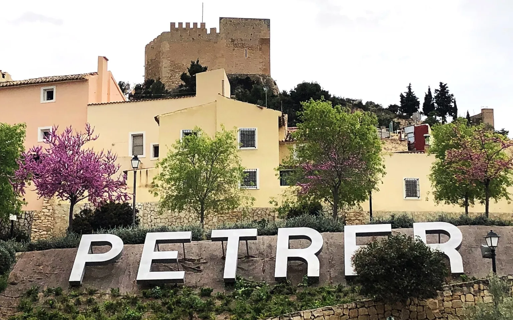

Discover The History and Nature of Petrer
In the fertile Vinalopó Valley, surrounded by exceptional nature, lies Petrer, at the foot of its imposing Muslim-origin fortress, the city's most important heritage site and a must-visit landmark. From there, the winding streets of its medieval old town cascade down the hillside to the town center. Petrer is part of The Route of El Cid, following in his footsteps along the section known as The Defense of the South. In addition to exploring the town, don't miss the Puça Ravine Waterfalls Route—you'll love it!